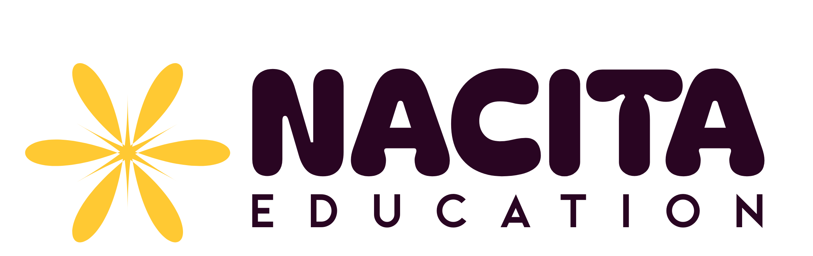

Kami percaya bahwa setiap anak adalah individu yang unik dengan cara belajarnya masing-masing. Oleh karena itu, kami hadir bukan sekadar sebagai bimbingan belajar biasa. Kami berdedikasi untuk memahami kebutuhan spesifik setiap murid, memberikan dukungan terbaik, dan mendampingi langkah mereka untuk memaksimalkan potensi serta perkembangannya. Jadi paham bareng Nacita!
Kegiatan pembelajaran berlangsung secara tatap muka di bimbel maupun home visit. Adapun ketentuannya sebagai berikut:
Kegiatan pembelajaran berlangsung secara daring (online) via Zoom Meeting. Adapun ketentuannya sebagai berikut: